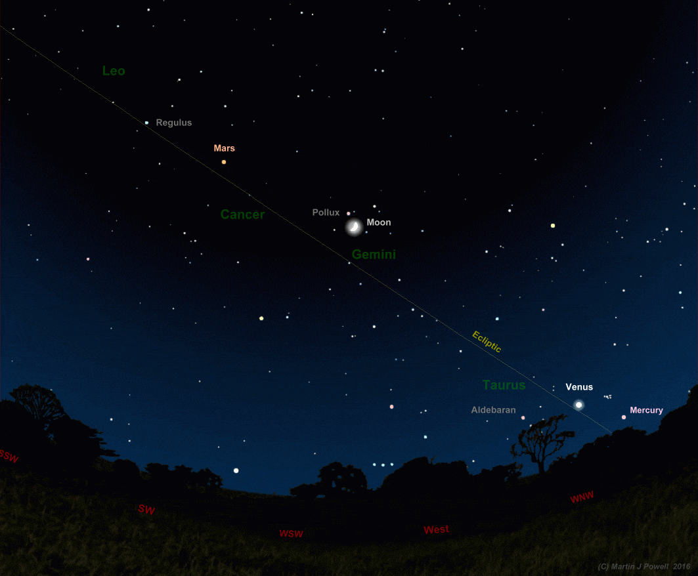
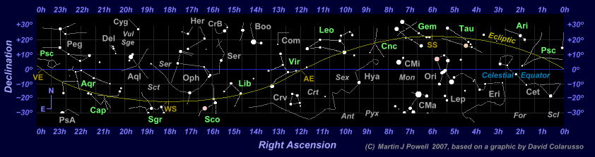
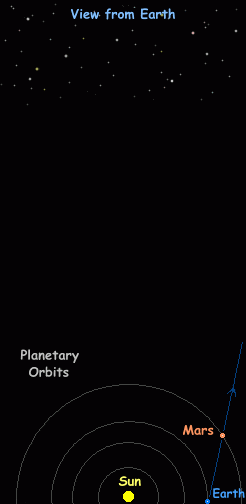
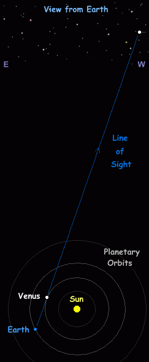
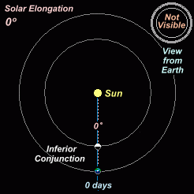
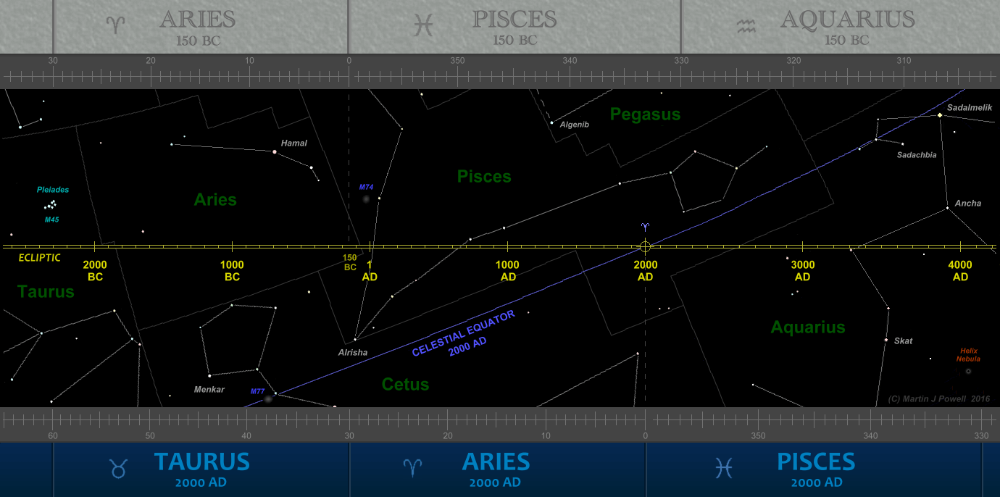

Ancient astronomy and the naked-eye planets
or how to navigate in the night sky
by Martin J Powell of naked-eye planets

Fig. 1: The night sky looking West on a Spring evening in the Northern hemisphere, showing the Moon and three of the naked-eye planets as they might typically appear among the zodiac constellations. In this picture pinkish Mercury and brilliant-white Venus, which are never found far from the Sun, are positioned in the constellation of Taurus, the Bull, soon to set in the North-west. Orange-red Mars lies on the boundary between the constellations of Cancer, the Crab and Leo, the Lion, high above the horizon in the South-west. Note how the Moon and planets are always found close to the ecliptic, the apparent path of the Sun through the twelve zodiac constellations. Diagram © Martin J Powell.
The planets orbit the Sun in a plane which is roughly aligned with the Sun's equator (a consequence of the manner in which the Solar System bodies were formed in its early history). Viewed from the orbiting Earth, the Sun, Moon and planets therefore appear to move along a narrow band of the sky (sometimes called the 'zodiacal band') which passes through the twelve zodiac constellations - Pisces (the Fishes), Aries (the Ram), Taurus (the Bull), Gemini (the Twins), Cancer (the Crab), Leo (the Lion), Virgo (the Virgin), Libra (the Balance or Scales), Scorpius (the Scorpion), Sagittarius (the Archer), Capricornus (the Sea-Goat) and Aquarius (the Water Bearer). In addition to these twelve, the Sun, Moon and planets also regularly pass through the Southern section of a thirteenth constellation, Ophiuchus (the Serpent-Bearer), which is positioned between Scorpius and Sagittarius. Historically, Ophiuchus has never been included in any official astrological zodiac.
The apparent path of the Sun through the zodiac constellations during the year is known as the ecliptic (from an ancient Greek word meaning 'the path along which eclipses occur'). Seen on a star map, the ecliptic is shaped like a sine wave with its most Northerly point in Taurus (at the Northern hemisphere's summer solstice) and its most Southerly point in Sagittarius (at the Northern hemisphere's winter solstice). The sinusoidal nature of the ecliptic results from the fact that the Earth's axis is tilted at an angle of 23.4º to the plane of its orbit.
Although the ecliptic is a simple curved path through the zodiac, the zodiacal band through which the Moon and planets pass measures several degrees in width because their orbits are tilted at varying angles to the ecliptic. As a result, the Moon and planets do occasionally move into adjacent constellations outside of the zodiac (e.g. Cetus, Orion, Sextans) for short periods of time. A planet's position along the ecliptic, measured from a starting point in Pisces known as the First Point of Aries or Vernal Equinox, is known as ecliptic longitude, whilst their deviation above or below it is known as ecliptic latitude.
Fig. 2: The Naked-eye Planets in Motion. The Sun and the five brightest naked-eye planets are shown here in continuous motion from January 2000 to December 2015. The overlay grid marks intervals of 10º in celestial longitude and latitude. The animation was produced (and is kindly made available for public use) by David Colarusso. A star map identifying the constellations is shown below.

Fig. 3: Star map of the constellation patterns in the above 'planets in motion' graphic. The ecliptic is indicated by the yellow curve and the celestial equator is indicated by the blue line. The constellation names are shown in their abbreviated three-letter form. Zodiac constellations are labelled in green and non-zodiac constellations in grey. The significant solar positions marked on the chart apply to the Northern hemisphere and are as follows: VE = Vernal (Spring) Equinox, SS = Summer Solstice, AE = Autumnal Equinox and WS = Winter Solstice. The numbers along the sides of the chart (Right Ascension and Declination) are coordinates of celestial longitude and latitude which astronomers use to locate the position of a celestial body in the night sky.
For thousands of years, ancient observers of the night sky noticed how, over periods of weeks or months, a handful of bright 'stars' appeared to move mysteriously against the steady constellation patterns. The ancient Greeks called them 'wanderers' (πλανήτες) and it is from their descriptive term for them that the word 'planet' is derived. The 'wanderers' would occasionally pause their motion, then reverse direction (retrograde), moving 'backwards' for several weeks before stopping again and resuming their original (prograde) direction of motion. This 'looping' or 'zigzag' motion of the 'wandering stars' was a puzzle to many civilisations across the world and over the centuries many theories were put forward in order to explain them.
The earliest theory to explain retrogression (or at least, the earliest theory to be written down) was that the Earth was positioned at the centre of the Solar System, with the Sun and planets orbiting around it. As they did so, the planets moved in epicycles, i.e. in a small circular orbit whilst at the same time orbiting the Earth; effectively, an orbit within an orbit. This geocentric model is most famously associated with Claudius Ptolemy (2nd century AD) but it is thought that he based some of his ideas on those of earlier scholars. The Greek astronomer Aristarchus of Samos (ca. 310-264 BC) had already proposed that the Earth orbited the Sun along with the other planets, but his theory was rejected in favour of the geocentric model, at a time when Man was widely considered to hold a special place at the centre of the universe. Belief in the geocentric model persisted until the first half of the sixteenth century, when the Polish astronomer Nicolaus Copernicus (1473-1543 AD) revived the heliocentric (Sun-centred) model of the Solar System and began the so-called 'Copernican Revolution'. But the true nature of the planetary orbits was not fully understood until the seventeenth century, when the German astronomer Johannes Kepler (1571-1630 AD) demonstrated that the planets move in elliptical orbits, their distances from the Sun and their rates of motion changing as they do so.
2.1 Superior Planets
Planets whose orbits are more distant from the Sun than the Earth (known as superior planets) appear to move backwards because the Earth, being closer to the Sun and moving at a faster orbital speed, effectively 'overtakes' the superior planet, the result being that the planet appears to retrograde against the distant star background (although of course, both planets are moving in the same direction). The situation can be likened to two cars travelling in the same direction along a highway, the faster car (i.e. the Earth) overtaking the slower car (the planet). A passenger seated in the faster car sees the slower car move 'backwards' in relation to its background - although of course, both cars are moving in the same direction.
At either end of the loop, where the planet is about to change direction, it appears to 'stand still' for a short while; these are known as stationary points.

Fig 4: Animation showing how a superior planet appears to describe a looping motion in the night sky over a period of several months. The example shown is for the planet Mars, but it applies to any superior planet. Note how all of the planets orbit the Sun in an anticlockwise direction, as seen from a point in space far above the Earth's North pole. Animation © Martin J Powell.
2.2 Inferior Planets
The orbits of Mercury and Venus (the inferior planets) are positioned closer to the Sun than that of the Earth and they also describe looping and zigzag formations against the background stars. However, unlike the superior planets, the looping formations of the inferior planets mostly cannot be observed with the naked-eye since they take place when they are too close to the Sun.
The situation regarding inferior planet loops is similar to that of the superior planets, except that the orbital placements of the planets involved are switched around. Inferior planets appear to move retrograde because the planet, being closer to the Sun and therefore moving at a faster orbital speed, effectively 'overtakes' the Earth (overtaking on the inside lane, so to speak), so that the inferior planet appears to retrograde against the star background.

Fig 5: Animation showing how an inferior planet appears to describe a looping motion in the night sky. Note how daylight interferes for much of the period, as the planet passes close to the Sun. The example shown is for Venus, but it also applies to Mercury. Animation © Martin J Powell.
Because the orbits of the inferior planets are contained within the Earth's orbit, they can only appear within a limited angular distance from the Sun (solar elongation). As a result, they are only visible for a limited period of time before sunrise or after sunset. Venus is commonly referred to as the 'Morning Star' or the 'Evening Star', depending upon whether it is positioned West of the Sun (morning sky) or East of the Sun (evening sky).

Fig. 6: Animation showing why an inferior planet can only be observed within a limited angle to the East or West of the Sun. The animation shows a complete synodic period of Venus (584 days). For ease of reference, the Earth is shown in a fixed position at the bottom of the animation. Since the Earth is also revolving around the Sun, its motion is indicated in relation to the blue line, which is directed towards a fixed point in space (e.g. a distant star). Animation © Martin J Powell.
Mercury's maximum solar elongation (greatest elongation) varies between 18º and 28º and for Venus, it varies between 45º and 47º. Mercury's greater variation in elongation angle is a consequence of its eccentric orbit. As a general rule-of-thumb, a planet cannot normally be observed from the Earth if its solar elongation is less than about 15º.
The superior planets, on the other hand, have orbits outside that of the Earth and are therefore not subject to the angular constraints of the inferior planets. Seen from the Earth, superior planets can appear at any angle up to 180º to the East or West of the Sun.
It is well-known that the Earth takes 365¼ days to orbit the Sun. Often simply called the orbital period, it is technically known as the sidereal period, and it is one of several ways of measuring the time taken for the Earth (or any planet) to orbit the Sun. The sidereal period is measured in relation to any given 'fixed' star; in other words, it is the time taken for an orbiting body to return to a position which is in-line with a chosen distant star in space. The sidereal periods of the five naked-eye planets which were known in ancient times (Mercury, Venus, Mars, Jupiter and Saturn) are listed in Table 1.
To an observer on Earth, the orbital periods of the naked-eye planets cannot be easily determined because the Earth itself is in orbit about the Sun. If the Earth were to halt its motion in space(!), we would need only to observe a planet's position against the background stars over a period of time until it returned to the same position, which would give us a very good approximation of its orbital period. This is not possible of course, so any attempt at deducing the duration of a planet's orbit must take account of the Earth's motion through space.
The period of time taken for a planet to return to the same orbital configuration in relation to the Earth (i.e. allowing for the motion of the Earth through space) is known as the synodic period. The synodic periods of each of the naked-eye planets are shown in Table 1. Hence Venus attains any given configuration (e.g. greatest elongation East, inferior conjunction, etc) about every 584 days and Mars reaches any given configuration (e.g. opposition, superior conjunction) about every 780 days. The figures listed in the table are averages because the planetary orbits are not perfectly circular, so there is some variation in the actual intervals observed.
Significant planetary configurations can be directly observed from Earth and using this data, the planet's orbital period (sidereal period) can be calculated using a simple mathematical formula.
In astronomy the term apparition is used to describe a continuous period during which any given planet is well-placed for observation, without it being lost from view in the Sun's glare. For the inferior planets this will be either of the following:
(a) beginning when the planet emerges into view out of the dawn twilight and enters the morning sky, passing through greatest Western elongation and ending when it disappears in the dawn twilight (i.e. a 'morning apparition'),
or
(b) beginning when the planet emerges into view out of the dusk twilight and enters the evening sky, passing through greatest Eastern elongation and ending when it disappears in the dusk twilight (i.e. an 'evening apparition').
Mercury's apparitions may last only a few weeks whilst those of Venus last around 8 or 9 months.
For the superior planets, an apparition begins when the planet emerges out of the dawn twilight into the morning sky, continues through opposition and ends when it disappears into the dusk twilight.
With the exception of Mars, apparitions of the superior planets typically last around 11 months. Jupiter, for example, is lost from view for about a month or so as it passes behind the Sun (passing through superior conjunction) so that it is essentially visible for most of the year. Because of the high angular motion of Mars, its apparitions last almost two years, followed by a period of around 4-5 months out of view as it passes behind the Sun.
A dedicated naked-eye observer will find that, should they observe for a long enough period of time, all of the naked-eye planets will begin to repeat their motions against the same background stars. In other words, planetary apparitions will repeat with accuracy after these intervals have elapsed. This does not happen after one synodic period - a planet will then be found in a different constellation - but they will do so after several synodic periods have elapsed.
The Babylonians of the first millennium BC were keen observers of the night sky and the planets' movements were of considerable interest to them for astrological and other purposes. Centuries of observation enabled them to identify repeating periodicities among the various planetary apparitions, which they named Goal-Year periods (from a set of clay cuneiform tablets known as the 'Goal-Year texts', which date from around the 3rd century BC). Venus has the shortest interval after which its apparitions are seen to repeat; they do so after just 8 Earth years have elapsed. Mercury's apparitions repeat every 46 years, whilst those of Mars repeat every 79 years. Today we know that these period relations are caused by pseudo-orbital resonances, the result of gravitational interactions between adjacent Solar System bodies over many millions of years.
Hence after a Goal-Year period has elapsed, a planet will appear at very nearly the same position in the sky as it did at the start of the period. Venus, for example, will appear at very nearly the same ecliptic longitude on July 19th 2016 as it will one Goal-Year period (8 years) later, i.e. on July 19th 2024. Looked at another way, after a Goal-Year period has elapsed the planet will be seen at the same ecliptic longitude at a calendar date which is within several days of the original calendar date.
The Goal-Year periods of the naked-eye planets identified by the Babylonians are listed in Table 1, along with other repeating intervals identified by the Greeks and other scholars in more recent history.
Planet | Mean Sidereal Period (years / days) | Mean Synodic Period (years / days) | Period Relations | Approx. Error after 1 Period Relation | |||
No. of Synodic Periods | = No. of Earth Years | Ecliptic Longitude (º) | Calendar Date (days) | ||||
Rounded | Actual | ||||||
Mercury | 0.2408 y 87.969 d | 0.3172 y 115.88 d | 63 | 20 | 19.9871 | 4.6 | 3½ |
104 | 33 | 32.9947 | 1.9 | 1½ | |||
145* | 46* | 46.0022 | 0.8 | ½ | |||
Venus | 0.6152 y 224.701 d | 1.5986 y 583.92 d | 5* | 8* | 7.9933 | 2.4 | 2⅓ |
Mars | 1.8808 y 686.980 d | 2.1353 y 779.94 d | 15* | 32* | 32.0298 | 10.7 | 18 |
22* | 47* | 46.9771 | 8.2 | 14 | |||
37* | 79* | 79.0070 | 2.5 | 4 | |||
Jupiter | 11.8617 y 4332.557 d | 1.0920 y 398.88 d | 54 | 59 | 58.9710 | 10.4 | 83 |
65* | 71* | 70.9836 | 5.9 | 47 | |||
76* | 83* | 82.9962 | 1.3 | 10 | |||
Saturn | 29.4565 y 10759.163 d | 1.0351 y 378.09 d | 28 | 29 | 28.9838 | 5.8 | 86 |
57* | 59* | 59.0028 | 1.0 | 15 | |||
Table 1: Orbital period and period relation data for the five brightest naked-eye planets. The sidereal period is the time taken for the planet to return to the same position in relation to a 'fixed' star, whilst the synodic period is the time taken for the planet to return to the same orbital configuration in relation to the Earth. The 'Goal-Year' periods which were recorded in the Babylonian texts are indicated by an asterisk (*).
The Babylonians used their Goal-Year periods in order to produce long-term predictions of planetary positions (almanacs). After the 2nd-century BC, Greek scholars such as Ptolemy and Hipparchus borrowed these same periodicities, making additions and amendments to them. One of the intentions of Greek scholars was apparently to seek a very large 'Great Year' period encompassing all of the planets, which would run to perhaps tens of thousands of years or more.
How does one identify a Goal-Year period mathematically? We are looking for the shortest periods after which the Earth and a given planet return to the same configuration in their orbits - not just in relation to each other (a synodic period), but also in relation to the background stars. A Goal-Year, therefore, can be identified when a multiple of a planet's synodic period, divided by the Earth's orbital (sidereal) period (365.25 days) results in an integer (whole number), or is very close to an integer.
For example, five synodic periods of Venus (5 x 583.92 days) = 2919.6 days, which divided by the Earth's sidereal period gives 7.99 Earth years. This is very close to 8 years, hence apparitions of Venus will repeat after 8 years, during which time Venus will have made 13 orbits of the Sun.
For Mercury, 145 synodic periods (145 x 115.88 days) = 16802.6 days, which divided by the Earth's sidereal period gives 46.00 Earth years - hence Mercury's apparitions will repeat after 46 years, during which time Mercury will have made 191 orbits of the Sun.
For Mars, 37 synodic periods (37 x 779.94 days) = 28857.78 days, which divided by the Earth's sidereal period gives 79.00 Earth years - hence Mars' apparitions will repeat after 79 years, during which interval Mars will have orbited the Sun 42 times.
Note that since each planet's synodic period will include a loop or a zigzag formation against the stars, it follows that within each Goal-Year period the planet will describe an equivalent number of loops and/or zigzags. Hence Venus will describe 5 loops, Mercury 145 loops and Mars 37 loops before the period concludes.
With regards to the superior planets, the Babylonians not only made use of their synodic periods but also their sidereal periods. The Babylonian texts describe the 79-year period of Mars, for example, as being the combination of a 32-year period, which falls five days short of 17 Martian sidereal periods, with a 47-year period, which is four days in excess of 25 Martian sidereal periods. Likewise the 83-year Jovian Goal-Year period was the sum of its sidereal period (rounded up from 11.86 years to 12 years) with the 71-year period.
How precise are the Goal-Year periods shown in Table 1? The approximate displacement (error) in ecliptic longitude and calendar date after each period relation has elapsed are shown in the final two columns of the table. The error in calendar date is the approximate number of days that would be required for the planet in question to return to its starting position. Hence after one Goal-Year period of 83-years, Jupiter could be expected to be found about 1.3º from its original position. Based on its average motion along the ecliptic (allowing for the Earth's motion) Jupiter would require about 10 days to return to its original position.
Most of the Goal-Year periods, position the planets to within about 3º or less of their starting positions, equivalent to a shift in calendar date of between 0.5 days and 15 days, depending upon the planet in question. Venus' displacement in longitude of 2.4º after one 8-year period was well-known to the Babylonians, amounting to a correction in calendar date of about 2⅓ days.
6.1 Longer Goal-Year Periods
Mercury: 480 years (= 1513 synodic periods),
Venus: 1151 years (= 720 synodic periods),
Mars: 284 years (= 151 sidereal periods = 133 synodic periods),
Jupiter: 427 years (= 36 sidereal periods = 391 synodic periods), and
Saturn: 265 years (= 9 sidereal periods = 256 synodic periods).
The period of 427 years given for Jupiter is constructed from the sum of six rounded sidereal periods plus five Goal-Year periods, i.e. (6 x 12 years) + (5 x 71 years) = 427 years. This resulted in a position for Jupiter which was accurate to within 1º in ecliptic longitude - an accuracy which holds true for a period of over four centuries. Hence these 'supercolossal' periods were appreciably more accurate than the shorter ones.
For Mars, a period of 284 years was the result of one small Goal-Year period plus three large Goal-Year periods, i.e. 47 years + (3 x 79 years) = 284 years. Venus has the largest period in the list, which although extending to over one thousand years, originates from the planet's only period relation of 8 years.
Historically, zodiacs have always begun at the point in the zodiac where the Sun is positioned at the Northern hemisphere's Spring (Vernal) equinox. This position, together with the Autumnal equinox, the Summer solstice and Winter solstice positions, slowly drifts Westwards through the zodiac, making one complete circuit in 25770 years (about 1º every 72 years). The effect is known as precession of the equinoxes and it was first systematised by the Greek astronomer Hipparchus (ca. 130 BC).
Precession is caused by the fact that, over many thousands of years, the Earth behaves like a spinning top winding down, its axis making a circular motion against the stars as it does so. It is also the reason why the Pole Star hasn't always been Polaris, as it is today.
At the time of the earliest (Egyptian) zodiacs, the Sun at the Spring equinox was positioned in Taurus (near the star Aldebaran). Around the time the Antikythera Mechanism was constructed (ca. 100 to 205 BC) the Spring equinox point was positioned in Western Aries and, at the present time, it is in Western Pisces. Because the zodiac we use today dates from around the time of the Antikythera Mechanism, the point at which the zodiac commences is sometimes called the First Point of Aries (though it is often marked on star maps as simply Vernal Equinox). It is the point at which the Right Ascension coordinate system originates (0 hours 0 minutes 0 seconds) and it is where the Sun's apparent path crosses the celestial equator (declination = 0º) in a Northward direction.

Fig. 7: Diagram showing the precessional movement of the Sun's position at the Spring equinox from 2600 BC to 4200 AD, marked at 100-year intervals. The First Point of Aries (or Vernal Equinox) is sometimes marked by the symbol of Aries, the Ram. It is the 'starting point' of the zodiac and is the point from which celestial longitude is measured. The astrological zodiac comprises the twelve astrological signs, each 30º wide. Three signs are shown in the diagram, positioned as they were in 150 BC (the ‘ancient’ zodiac, at top of diagram) and in 2000 AD (the ‘modern’ zodiac, allowing for precession, at bottom of diagram). In the year 150 BC the Sun was positioned in Western Aries and the celestial equator would then have passed through central Pisces and Southern Pegasus. Precession of the equinoxes causes the First Point of Aries to drift Westwards over time (left to right in the diagram) so that by the year 2000 AD it was some 30º West of its position in 150 BC. Hence the zodiacal signs (astrology) and the zodiacal constellations (astronomy) are now one constellation out-of-step with each other. By the year 2600 AD, precession will carry the Sun's position at the Spring equinox into Aquarius, the Water Carrier. Diagram © Martin J Powell.
Modern-day star atlases allow for precession by fixing the date to a particular epoch, which is typically revised every 25 to 50 years. Prior to the 1980s, the epoch used was 1950.0 and since the 1980s it has been 2000.0. If a star atlas published in the 1950s or '60s is compared with one published today, one can see how the coordinate grid has drifted in relation to the background stars, due to precession.
Astrologers today mostly use the 'ancient' zodiac and ignore the effect of precession. Consequently a person born on April 5th is said to be born under the sign of 'Aries', whereas the actual position of the Sun on this day is in Pisces, i.e. one constellation out-of-step!
References